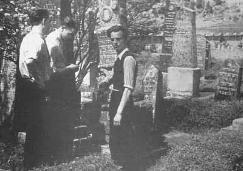
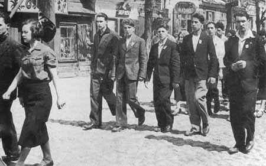
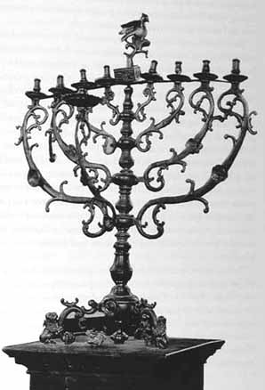

| |
GRODNO UNDER SOVIET RULE, 1939–1941
On September 1, 1939, under cover of the Russo-German Non-Aggression
Pact, which had been signed a week earlier (August 23) and
included an appendix to divide Poland between the two countries,
Germany invaded Poland. At the same time, the Germans urged their
Soviet ally to seize the area that it had been allocated under the terms
of the agreement. The Soviet Union, surprised at the speed of the
German advance and the crushing defeat of Poland, lost no time. On
September 17, the Red Army crossed the border and within days had
occupied all of eastern Poland.
According to another agreement (the German-Soviet Boundary and
Friendship Treaty of September 28), the border between the two
countries followed a series of rivers: the Pissa, Narew, Bug and San.
Within less than a month, western Byelorussia had been annexed to the
Soviet Union within the framework of the Byelorussian Soviet
Republic. Thousands of officials, journalists, teachers and
administrative staff were brought from Russia to organize life in the
newly occupied areas. The annexation process was rounded off by the
adoption of the Citizenship Law, stipulating that everyone who was in
the occupied areas on the day of the annexation was automatically
considered a Soviet citizen, as were all those who arrived in the wake of
the Soviet-German agreement by means of a population exchange
(November 16, 1939). All other refugees, who belonged to neither of
these categories, were also entitled to request Soviet citizenship.
The annexation was accompanied by the Sovietization of private
property. Land, banks, factories, businesses, shops, and large
workshops were nationalized. Heavy taxes were levied on small private
businesses. Almost immediately the ruble was equalized to the zloty, a
step that violated the status quo according to which the ruble was
pegged at a lower value than the zloty. On December 31, 1939, the zloty
was abolished, leaving the ruble as the sole legal tender. In the first
weeks after their arrival, the representatives of the new government –
officers and soldiers, officials, workers and others – went on a buying
spree. Watches, pens, clothing, jewelry, shoes – everything was
snapped up; the shelves were left empty. At the same time the
authorities confiscated raw materials and entire warehouse stocks.
There were many other changes as well: Poles were denied access to
senior public-service positions; Russian and Byelorussian were made
the official languages; the courts were overhauled; the churches were
heavily taxed; and former senior officials and leading personalities were
arrested, including police and army officers, judges, industrialists,
landowners, bank officials, affluent merchants and other well-to-do
Poles. The detainees were exiled to remote regions of Russia together
with their families.
On the eve of these events, the Jews constituted 10 percent of the
population of eastern Poland, but their share of the population in the
cities was far higher. In the Bialystok district the Jews accounted for 38.4
percent of the population, and in Grodno – for 42.6 percent. Their
intensive urbanization naturally meant that their social and economic
structure was “capitalistic” in character. In the eyes of the new
authorities, therefore, a large proportion of the Jews belonged to the
capitalist class. As a result they were more vulnerable than other
nationalities in eastern Poland to the new measures that stemmed from
the Soviet economic system.
On the eve of World War II, the Jewish population of Grodno was
approximately 25,000. This number remained stable despite the
deportations by the Soviets, since the Jews deported into Russia were
replaced by Jewish refugees who settled in Grodno.
The Red Army Enters Grodno
During the first three weeks of September 1939, before the Red Army
entered the region, the entire Grodno area suffered from the Germans’
aerial bombardments. Those affected the worst were the urban centers,
as the Germans targeted industrial zones and railway lines. The Polish
army fell apart, and its soldiers fled the front wounded, beaten, and
broken in spirit. Utter confusion prevailed. Businesses shut down, and
normal life came to a standstill.
The Jews suffered even more than the general population. They
huddled in their homes and listened to the news on the radio. Some left
the city during the bombing raids and made for nearby towns; Jews
residing in the suburb sought shelter on the other side of the Nieman
River, as the danger was greatest in their one-storey houses.
When the local government broke down, a menacing atmosphere
could be felt among the Poles, as they believed that the Jews were
confirmed admirers of the Russian Communist occupiers. The Poles
took advantage of the few days between September 18 and 20, 1939,
after the Polish forces had left Grodno but before the entry of the
Russians, to perpetrate a large-scale pogrom in the city. However, a few
prescient Jews had organized paramilitary units in order to maintain
security and order and prevent vandalism and looting. Thus, in the
residential suburb at the city’s entrance a group of young Jews and
Byelorussians (co-workers in a glass factory) banded together to disarm
a gang of thugs from the Polish army. Another gang, which had
organized when Grodno workers had freed political prisoners, decided
to “impose order” in the city. Their leader, a member of the Polish
judiciary named Mikulsky, gathered a lawless rabble around him,
including policemen and members of the nationalistic organization
OZN armed with rifles and pistols. They wandered through the city,
stealing, looting, brutalizing, and killing the defenseless population.
Their pogrom claimed twenty-five fatalities.
The arrival of the Red Army on September 22, 1939, put an end to the
anarchy, uncertainty, and lawless violence. The terrified Jews greeted
the Russian forces joyfully, viewing them as their saviors. Even Jews
who wanted no part of either communism or socialism were grateful.
One local resident, Feigl Broide, expressed these feelings lucidly in a
letter to her son, Abraham, in Palestine:
We are all alive, thank God, and the Red Army saved us from
Polish hooligans. If the entry of the Red Army into Grodno had
been delayed by even one day more, not a Jew would have been
left alive.1
1 Letter from Feigl Broide to her son, Abraham, in Eretz Israel, November 23, 1939,
in the possession of Rahel Broide, Kefar Menahem.
The Soviets, who were aware of the tension between Jews and Poles,
endeavored to suppress the outbursts of antisemitism, which reached a
peak on the eve of the Red Army’s entry into Grodno on September 22,
1939. The principle that antisemitism was incompatible with the Soviet
regime was backed up with deeds, and anti-Jewish violence was
vigorously punished. In June 1940, the thirteen Grodno pogromists –
among them Polish army officers, policemen, and members of
anti-revolutionary organizations – were tried in a Soviet court. The
ringleader, Mikulsky, escaped to Lithuania. Four of the defendants
were sentenced to death; seven received prison terms of six to eight
years; and two were released. The Jews felt that their lives were no
longer dispensable and that they had as much government protection
as the rest of the population. This new feeling of equality marked a
considerable contrast to the atmosphere of hatred and threat that had
prevailed during the Polish period. The Soviets also implemented a new
employment policy that enabled many Jews to find jobs as civil
servants; some served in the militia, and in one of Grodno‘s quarters
there was a Jewish police chief.
By comparison with the blatant, crass antisemitism of pre-war
Poland, the Soviet regime seemed to its new Jewish subjects to be
enlightened and fair, at least at first glance:
The Soviet army did not come as a conqueror and did not behave
like one. The soldiers behaved courteously, the Jews among them
did not hide their origin, but displayed an interest and a cordial
attitude toward the [local] Jews and aroused their sympathy for the
new regime.2
2 Rivka Perlis, “The Halutz Youth Movements in Nazi-Occupied Poland During the
Holocaust” (Ph.D. Thesis; Hebrew), Jerusalem, 1984, p. 55.
Whatever apprehension the Jews may have had about the Soviets, it
was negligible compared to their overpowering dread of the Nazi
alternative, even though little was then known about the Nazis’
atrocities in Germany and elsewhere.
However, to the Poles, in contrast to the Jews, the Soviet Union was
a traditional enemy. They regarded the Red Army as an invading force
that was determined to eradicate Polish independence in collusion with
Nazi Germany. Indeed, the new regime took economic measures
against the Poles and in many areas lowered their standard of living.
Senior officials were removed from their posts, various groups were
arrested and deported, and Russian replaced Polish as the official
language. In short, the Poles loathed the annexation to the Soviet Union
and dreamed of revenge.

In the old Jewish cemetery
The Jews’ overt joy at the Red Army’s arrival only aggravated the
tension; to the Poles the Jews were, if not traitors, then collaborators
with the hated new regime. The Poles’ feeling of impotence, their
frustration at being unable to express their feelings in deeds, for fear of
the authorities, only deepened their hatred of the Jews, and they
awaited a propitious moment to act. The Jews, sensing the threat which
was gathering momentum below the surface, endeavored already then,
when the Soviet regime was at the height of its power, to explain
themselves to the surrounding population and to prepare for the future.
(The future, indeed, would demonstrate that their fears were well
founded. During the Nazi period the Jews faced danger not only from
the occupier but also from the Polish population, whose reactions to the
Germans’ anti-Jewish actions ranged from studied indifference to
Schadenfreude and informing on Jews to the authorities.)
Jewish Communal Life: Change and Adaptation
Two parallel processes marked the Jews’ situation under the Soviet
regime: on the one hand, it was an auspicious period for bettering
oneself by acquiring an education, a profession, and general culture;
but, at the same time, all Jewish aspects of life were expunged. While
industrial enterprises benefited all the residents of the city and its
surroundings, virtually everything distinctively Jewish was rooted out.
General schools were opened, but the Hebrew school was shut down;
public libraries flourished, but the Jewish library was closed. The Jewish
youth movements were replaced by the Pioneers and the Komsomol
(Communist Party youth organizations for children aged ten to fifteen
and for those over fifteen, respectively). Only the theater was permitted
to exist, but even that under the strict eye of the censors. In Grodno,
where nearly half the population was Jewish, the eradication of the
distinctively Jewish spheres of life was flagrant.
Communal and Religious Life. Naturally, the liquidation of the civil
institutions and organizations resulted in the disbanding of the Va’ad
ha- Kehillah, and all activity in Jewish social and welfare institutions was
terminated. The Jewish charitable organizations, including the
orphanage and the old-age home, ceased to exist; such institutions now
had to cater to the general society. Every change in personal status
(marriage, birth, death, etc.) had to be registered in the Department of
Civil Operations (ZAGS). The staffs of the communal organizations
were left idle and had to adjust to the new conditions and their
deteriorating economic status. Even though in theory “the Jewish
religion is treated as the private affair of each individual, and if it
remains within those parameters it is not persecuted,”3 in practice the
Jews were unable to observe the Sabbath, since Sunday was fixed as the
official day of rest. Most of the Jews, who were now employed in the
state economy, could not afford to lose part of their already miniscule
wage or risk their superiors’ wrath if they did not appear for work on
Saturdays. At a later stage, absence from work for reasons other than
illness would be punished by a fine and even arrest.
3 The Holocaust of Polish Jewry (Hebrew), Jerusalem, 1940.
Although the synagogues were generally not shut down, they were
taxed, and the entire responsibility for their upkeep was placed on the
worshippers. Following the dissolution of the Va’ad ha-Kehillah, the
synagogues assumed greater importance as a meeting place for
observant Jews, and, when refugees began arriving from western and
central Poland, they fulfilled a key organizational and relief function. As
compared with other areas in which the Soviet authorities took a rigid
approach, they were a bit more lenient in matters of religion; they
allowed the observant some breathing space and refrained from making
mass arrests among clerics.
Anti-religious propaganda was conducted mainly through the press.
The newspaper Bialystoker Shtern in particular lashed out against
Judaism and excoriated its nationalist character. In a lengthy article
entitled “Communism and Religion” (June 1940), the paper attacked
religion in general and the Jewish faith in particular. It contrasted
reactionary, nonscientific Judaism with Communism, the fomentor of
a new social order that educated people to help themselves instead of
believing in divine deliverance. The paper would step up its
anti-religious propaganda as the Jewish holidays approached, and
especially before Passover and the High Holy Days. The Jews were
called on to work as usual on these days and not to crowd around the
exploitative rabbis and the well-heeled in the synagogues. The paper’s
general message, which ran like a thread through its pages, was the need
to intensify the anti-religious campaign. Still, the scathing attacks on
religion and the calls for a greater propaganda effort are indirect
evidence that, despite all the difficulties, some Jews succeeded in
observing commandments – attending synagogue, fasting on Yom
Kippur, celebrating Passover – albeit with care not to attract attention.
It must be emphasized, however, that only a small group of Jews
remained loyal to their faith; most abandoned religion under the new
circumstances.
Education and Culture. Owing to the chaos in the city, the schools did not
reopen at the end of the summer vacation. However, because of the
importance they attached to the educational system, the Soviets
considered it urgent to reactivate the schools as soon as possible and
adapt them to their system. As soon as the situation in Grodno
stabilized, the Municipal Department for Popular Education (the
Gorono) convened a meeting of all teachers of all nationalities from all
the city’s schools. They were addressed by the head of the department, a
Jew from Minsk named Shapira (a shoemaker by trade), who explained
the Soviet method of education that was to be introduced in Grodno.
Very soon words were translated into action. All the schools were
converted into seven- or ten-grade institutions, or into technical schools,
based on the Soviet system. The largest number of schools were
Byelorussian, followed by the Russian schools, then the Polish, and
finally a single Jewish school with ten grades. Clearly this did not
correspond to the population distribution, since Jewish children
constituted the overwhelming majority while Byelorussian pupils were
a distinct minority. Thus there was practically no choice for Jewish
parents but to send their children to the few Polish schools or to the
Byelorussian schools, where the Byelorussian children from the
neighboring villages studied (and their educational level was very low).
The same pattern was repeated in the one Jewish high school, where the
majority of the pupils and teachers had formerly been part of the
secular-Zionist Tarbut system. The new curriculum was adapted to the
Soviet format, and Yiddish rather than Hebrew became the language of
instruction.
However, even the one Jewish high school was short-lived. The
municipal department of education convened a meeting of parents who
“voluntarily” decided to turn the school into a Russian one. Its new
name was “Russian Ten-Grade School No. 7.” Gradually the teachers
were replaced with others who came from Russia, and Christian pupils
were placed in Jewish classes. Thus Yiddish-language instruction also
came to an end.
In fact, the Jews’ cooperation was illusory. Their vote in favor of a
Russian high-school was prompted in no small measure by utilitarian
considerations: they wanted their children to get ahead and knew that
knowledge of Russian would open more doors. But even then there was
criticism of the Jews’ decision, and particularly of the teachers, this time
because of the Yiddish aspect:
In Grodno, in the school of commerce, in which the teachers
urged Yiddish (not knowing Russian), only 50 percent of the
parents voted for instruction in Yiddish. It should be remembered
that just yesterday these same parents were Zionists or Bundist
Yiddishists.4
4 Al Masuot (Hebrew), Merhavia, 1940, pp. 132-134.
This criticism concludes with the statement that the teachers in the
Hebrew school failed in their duty. Perhaps they did not betray their
Zionist faith, but “they remained quiet and complacent and made not
the slightest effort to keep the spark alive.” Yet if the parents took a
utilitarian approach, the teachers, too, had to adapt to the new situation.
Indeed, there was no real choice, and the transition from Hebrew to
Yiddish was the least of the evils.
The propaganda articles that appeared in the Bialystoker Shtern praise
the Soviet educational system in Grodno profusely. Twenty-one
elementary schools were established in the city, with Byelorussian the
language of instruction in ten, Yiddish in five, and Polish and Russian
in three each. According to the paper, the Jewish pupils in Junior High
No. 16 were pleased at not having to learn unnecessary subjects. The
paper was referring to the fact that the new curriculum, as an integral
element of the Soviet system, abolished classes in the history of the
Jewish people, Bible, and Judaism. The Yiddish language and its
literature remained the final vestiges that differentiated the Jewish
schools from the others.
The Jewish pupils themselves recalled this as a lively period. There
were many sports activities and musical events, and parades were
frequent; an inter-school Olympics was held, and the Pioneers and
Komsomol were active. The Jewish teachers, though, had a different
perspective. These teachers, and especially those from Galicia, who did
not know Russian,
worked hard, but became a caricature of the language. It is certain
that in virtually no time they would have been replaced by
teachers sent from the Russian interior, but [the Soviets] did not
manage to effect this because the war [with Germany] erupted just
as the school year ended.5
5 Hersh Smolar, “Jewish Life in Soviet Western Byelorussia 1939-1941” (Hebrew),
Shevut 4 (1976), p. 134.
Textbooks were also in short supply. The schools, now incorporated
into the Soviet system, were not prepared for the hasty opening of the
school year. The curriculum had undergone sweeping revisions and the
textbooks had to be brought from the Soviet Union. A report in the
Bialystok regional newspaper relates that textbooks in Polish and
Yiddish were being printed in Kiev and that a large shipment was due
soon in Bialystok and its surroundings – evidence that the problem was
not only the language and the new subjects, but that there was also a
shortage of teaching materials and, above all, textbooks.
To help cope with the expanded educational system and its
innovations, special courses were held for teachers, and training was
provided for new teachers. The Bialystok educational department held
a series of courses in that city and in Grodno for teachers of geography,
history, Byelorussian, Russian and others.
High-schoool graduates who so wished could proceed to university or
vocational studies. The Soviet administration ensured that every
student received a scholarship keyed to his grades, and the top pupils
were exempt from tuition. The result was that in the Soviet-annexed
areas, including Grodno, academic studies and vocational training
assumed manic proportions. Courses were offered in quality-control,
for railroad workers, drivers, and nurses. Colleges, seminars, a technical
school, and a range of vocational high schools were opened. Many
young men and women were sent to courses outside Grodno, usually in
Bialystok. High-school graduates with good grades had no problem
continuing their studies, such as in a pre-medical school opened at the
initiative of the new government. All types of courses were available
even to those with barely any education. (Zippora Lusovitz, who sold
beer from the barrel, related: “For that I took a course.”) The feeling
was that all doors were open to students. Even those who had been
unable to study in the Polish period or had been compelled to break off
their studies now had the opportunity to complete their schooling.
Press. All the Jewish papers were shut down within a day of the entry of
the Soviet forces. Not a single Jewish paper remained in Grodno, and
only one Yiddish paper based in Bialystok, the Bialystoker Shtern, was
permitted to continue publishing. It covered all of western Byelorussia.
This paper was actually the successor to Unser Leben, which had
appeared in Bialystok since 1918, edited by Pesah Kaplan, but now it
received Communist dressing. Because of the plethora of official
material that the paper was obliged to publish, it became basically a
translated version of the Byelorussian paper, with little space left for
original material. (Still, it was in a better situation than the Polish paper,
which was barred from printing any original material at all.) The
reporters were in an awkward situation. They had limited options for
creativity because of the slew of official items they had to print, yet they
were constantly suspected of displaying excessive independence, as
though they were involved in “shaping Jewish public life.” Eventually
the paper was reduced in size. Besides the articles and reports against
the Jewish religion, it reported widely on the party and its functionaries,
elections, and the success of the Communist system in various regional
towns. Reports about events at the front also appeared, but without
commentary or attempts to draw conclusions. The paper was silent on
the persecution of the Jews in the German-occupied areas.
Theater and Arts. The Soviet authorities considered the theater to be an
effective propaganda vehicle. Consequently, the Yiddish theater was
the only Jewish institution that was permitted to function, even enjoying
government encouragement and financial support. Refugee actors and
directors were very active in the theater. In Grodno a theater company
called Baveglecher Yiddisher Melukhisher Teater (“Wandering State Jewish
Theater”) operated under the direction of Morris Lampa. As its name
suggests, the company was highly mobile and appeared in all the cities
and towns of western Byelorussia – Slonim, Wolkowisk, Sokolka,
Baranowicz, and others. One of its productions, Tuvia the Milkman,
enjoyed great success and played to packed halls. A series of theater
workshops was also established. “I was astonished to see the number of
tailors, shoemakers, carpenters, locksmiths, painters, closet-makers and
other craftsmen,” said Zvi Aviram,6 who worked in the arts department.
6 Zvi Aviram, “Episoden un Refleksen,” Grodner Opklangen (Yiddish), September
1975.
Amateur arts were also developed. In the early summer of 1940, a
festival of arts was held in Grodno. Jewish choirs from the health-spa
town of Druskeniki and from the towns of Lunna and Amdur
participated.
Grodno’s Jews, like the city’s other residents, enjoyed theater in other
languages as well. The arts department invited a variety of groups from
Moscow, Leningrad and Minsk, including theater and ballet
companies, the Red Army Chorus, orchestras, a puppet theater, and
many individual performers.
Libraries. As part of the “re-education” of the book-reading public, the
authorities purged the libraries. First all the libraries were shut down so
that their books could be screened. Books in Yiddish and Polish were
vetted according to Soviet criteria, and publications that were found
unsuitable – including, of course, everything in Hebrew – were removed.
Approved books were transferred to general, state-run libraries.
In Grodno, a supervisor from Minsk, working with two local
members of the Communist Party, scrutinized all the libraries in town.
They banned nearly all books written by Jews, permitting only the
Polish classics and works by Mendele Mokher Seforim and Sholem
Aleichem. All Hebrew books were “purged.” The Tarbut school
library, which contained 30,000 volumes in a variety of languages as
well as many manuscripts, was a treasure house of the old and new
culture. The librarian, Shmuel Ginzburg, sneaked into the library,
“stole” the valuable volumes, and distributed them among the school’s
teachers and pupils for safekeeping “until better times.” Many books
were indeed “disqualified,” and tens of thousands of volumes were
turned into scrap paper. To fill the space on the shelves, Yiddish books
were soon brought from the Soviet Union for the regional library in
Bialystok, which also served Grodno.
Political and Zionist Activity. The members of the He-Halutz youth
movements did not share the Jews’ general delight at the arrival of the
Red Army. To them the Soviets represented both an immediate threat
to their organizational and ideological existence and a future threat to
their plans to settle in Eretz Israel. The Soviet regime was known for its
opposition to national movements overall and to Jewish national
movements in particular. Hence the incisive saying that was often heard
in the youth movements: “Until now we were condemned to death,
now our sentence has been converted to life imprisonment.”7
7 The Holocaust of Polish Jewry, op. cit., p. 34.
In Grodno all activity came to a halt. The parties hid or burned their
archives, and activists went into hiding. To ensure that they would not
endanger the new regime by organizing resistance, the secret police
arrested and, in some cases, exiled them. One of the victims of this
policy was the Zionist activist Noah Bass, who was arrested by the
NKVD, interrogated, and ordered not to engage in Zionist activity.
Following his release, he was rearrested in June 1941, and placed on a
train to Russia. The train was bombed, and he and his wife were killed.
Chaim Snarsky from the Revisionists and other Betar movement
activists were also arrested. The head of the local Ha-Shomer ha-Za’ir
branch was summoned to the NKVD several times and was
interrogated about the movement’s activities and about friends of his
who were undergoing hakhsharah training at Grodno.
Strangely enough, the first to be arrested were the leaders of the
Bund. The Soviets had a lengthy account to settle with the Bund, whose
members they viewed as “servants of the reaction who do their work for
the benefit of the capitalists.” The Bund Party Committee sought
cooperation with the new administration, but their leader, Leib Shifres,
was arrested in October 1939, together with other Bundists. After five
days of interrogation at the hands of the NKVD, they were incarcerated
in Grodno prison. There Shifres was questioned about the CISHO
school, about Bund activity, and about an ammunition dump that Bund
members had allegedly prepared together with the PPS party in order
to stage a revolt against the Red Army. The interrogator was, of course,
a Communist, a woman who had fled to Russia from Poland and then
entered Grodno with the Red Army.
Both the kibbutz and hakhsharah frameworks were eventually
liquidated, but in the meantime continued to exist in the occupied zone.
The kibbutzim were those of Dror and three kibbutzim were
Ha-Shomer ha-Za’ir, one of which, Ma’anit, was located in Grodno.
The kibbutzim did not hide their identity, and the authorities displayed
some tolerance in their efforts to persuade their members to join the
Communist camp, utilizing both propaganda techniques and promises
of personal benefits. But their patience soon ran out; the kibbutzim were
disbanded, and their members feared arrest. Some fled to free Vilna in
order to establish a He-Halutz center there and in the hope of being able
to reach Palestine; others went underground and confined their activity
to transmitting information from the Yishuv (the Jewish community in
Palestine) and learning Hebrew. The kibbutz of Ha-Shomer ha-Za’ir in
Grodno, which initially had served as a haven for activists fleeing from
the German occupation zone and as a way station for those bound for
Vilna, was liquidated in November 1939. Its young members organized
in underground cells of three or four individuals and met to hold
periodic discussions.
Many members of Zionist youth movements joined the Komsomol
and were active within it, even if this did not always stem from an inner
conviction; indeed, in many cases, they were pressured to join. But an
educational atmosphere prevailed, and the youngsters helped decide
on the themes of the various activity groups and took part in organizing
competitions. Those aged ten to fifteen were made to join the Pioneers,
which met once a week; the members wore special ties and their shirts
were decorated with symbols of various kinds.
Economic Developments and Employment Profile. The Sovietization of the
economy affected the entire population. However, the Jewish
communities in the large and medium-sized cities were more
vulnerable because of their distinctive social and economic structure. In
Grodno, the majority of the Jews were engaged in commerce, industry
and crafts, or in the liberal professions. Some owned factories or small
workshops.
First to be nationalized were industrial enterprises. Often a factory was
nationalized together with its owner’s home. Many of the dispossessed
factory owners had no other choice but to leave Grodno and find a
hiding place as well as a source of living somewhere else. Others were
employed as workers in the factories they had once owned, and some
were dismissed and arrested after a few weeks or months and sent to
distant parts of Russia. Managers were brought from Russia for the large
enterprises, such as the bicycle and tobacco factories, and additional
clerks (also from Russia) and workers were taken on. The former factory
owners received identity cards stamped “Article 11,” a code that
restricted their freedom of movement. Nevertheless, besides those who
were arrested and exiled, some escaped to Lvov, Slonim, Vilna and
other places.
Initially, the new regime did not harass small businesses. On the
contrary, such enterprises enjoyed something of a boom, albeit one that
was both artificial and short-lived, as they were given until the end of
1939 to dispose of their remaining stock. Actually, this presented no
problem, for, as we have noted above, immediately after the occupation
the Russian soldiers went on a spending spree, buying whatever came
to hand and without haggling about prices. Many stories sprang up
around this buying binge. The local population was also seized by the
mania and began hoarding. A popular quip at the time was: “First you
stand in line, and then you ask what’s on sale.” Within a few months the
city experienced a shortage of clothing, footwear, and other basic items.
As for the shopkeepers, although they got rid of their entire stock, and
at a good price, a large part of their earnings went for the heavy taxes
that were imposed to “make their pockets lighter,” and those who failed
to buy rubles in time suffered drastic losses when the zloty was
abolished as legal tender on December 31, 1939. At the end of 1939, all
the merchants had to close down, since they could not renew their
stock. Some had hidden goods in their home, for fear of remaining
without a livelihood; if caught, they were tried and punished with
imprisonment or exile.
The self-employed Jewish artisans, who constituted the majority of the
craftsmen in Grodno, generally took the hints from above and began to
organize in cooperatives and artels, an option that they preferred to
factory work. The transition was gradual. Initially, because of the heavy
taxes and the shortage of materials, they joined the existing
cooperatives, but soon new artels were established in Grodno for
shoemakers, tailors, carpenters, and barbers; most of the members were
apparently Jewish.
An important source of employment was the state bureaucracy. Jews
held clerking positions above their proportion of the population, but at
the intermediate and lower levels. The senior positions in Grodno were
reserved for Byelorussians, in accordance with the Byelorussification
policy in the republic.
Jews were far less prominently represented in the teaching profession.
Although, as we have described, the Soviets opened many schools and
courses, and a variety of cultural institutions provided the intelligentsia
with a livelihood, it was the Byelorussians who were preferred. This was
even more flagrant than in other spheres, because they knew the
language and because of the Byelorussification drive.
Most of the Jewish lawyers could no longer make a living because
private law practices were prohibited. The old judicial system was
replaced by “people’s courts” based on the Soviet constitution, and only
lawyers with a “clean record” (i.e., of proletarian extraction) were
accepted in the new system. At the same time, the physicians’ lot was
somewhat improved, as they were now permitted to work, in contrast
to the Polish period. However, they were absorbed into the state
medical service and, from the beginning of 1940, were no longer
permitted to engage in private practice. The Soviet regime’s
development of the health system generated a large demand for nurses,
both male and female. Some of the self-employed pharmacists were
also integrated into the state system following the nationalization of the
pharmacies in December 1939. Jews also found work as engineers, a
profession that was in growing demand.
Those who found employment as salaried workers soon discovered
that in the Soviet regime wages were below the subsistence level. A
worker made about 250 rubles a month at a time when the official prices
of basic commodities were, for example, 1 ruble for a loaf of bread, 8
rubles per kilo of meat, 25 rubles for butter, and so forth. Clearly, such
a salary was not enough for even basic items.
Some Jews drew on the help of relatives in the Soviet Union. Letters
belonging to the Broide family indicate that their uncle sent them
sweets and that when he visited he brought them food and electrical
goods that were unobtainable in Grodno.8
8 In the possession of Rahel Broide, Kefar Menahem.
One of the most serious blows to the local population, including the
Jews, was the authorities’ confiscation of rooms and apartments in order
to house the many experts who were brought in from the Soviet Union.
These included the families of Red Army officers and civilians who
were in charge of establishing the government offices. The result was
that the city’s population increased dramatically. The authorities seized
flats with their furniture, or forced local residents to let part of their
homes to lodgers. There was not a house in the city without a Russian
family.
Some Jews were evicted for other reasons, such as the ban on residing
in the industrial zone. Houses and flats larger than 50 sq. meters were
confiscated and their owners ordered to find a residence 100 km. away,
since Grodno was declared a border city. The lack of uniformity in the
confiscation criteria and the authorities’ arbitrary behavior generated
considerable tension. Many Jews were affected by the confiscation of
dwellings, since the majority belonged to the middle or upper-middle
class and were concentrated in the urban areas, particularly in the city
centers.
The Soviets brought with them new and different economic norms
expressed in low wages, shortages in materials, rising prices, and a
declining living standard. Nevertheless, most Jews were able to adapt
to the new situation, found work, and earned enough to make ends
meet. Quite a few Jews felt no substantial change, or thought that the
Soviet socioeconomic order suited them, even though most had not
previously been Communists. Indeed, the majority view was that the
new situation was the best that could be hoped for under the
circumstances: despite the shock of the new reality and the
disappointment in the regime, there was no better alternative on the
horizon.

Jewish youths at the 1st of May demonstration
Refugees. Immediately after overrunning western Poland, the Nazis
began persecuting the Jews, and many fled eastward. The border with
the Russian zone remained open for a brief period, until mid-October
1939. At the end of that year the Soviet authorities strictly forbade
border crossings; the punishment was a three-year prison term.
Most estimates speak of about 200,000 refugees in the Soviet zone of
occupation, or 25 percent of the total Jewish population. Grodno was
inundated with about 4,000 Jewish refugees. Many of them were
intellectuals – writers, theater personalities, musicians – but there were
also some workers and craftsmen. Most regarded Grodno as a
temporary haven, or a transit station on their way to Vilna, which was
still free. The refugees filled the synagogues and the buildings of the
Jewish public institutions; every Jewish home took in as many as
possible. In the absence of organized assistance, the synagogue became
the center of aid for the refugees. The local Jewish population cooked
for them and assisted them with clothing and money.
However, such aid was insufficient to maintain the refugees
indefinitely; subsequently they became wards of the Soviet authorities,
who acknowledged the need to provide them with work and housing.
In late 1939 or early 1940, refugee-aid committees, known as
“Kompobez” (Komitet Pomoshchi Bezhentsam), were established in
Grodno and other cities. Their purpose was to assist the refugees with
food and clothing, while at the same time exploiting them for the
economy and the security services. The committees were also in charge
of registering the refugees for employment and for passports. However,
as little work was available locally, the Soviets began sending refugees
to the Russian interior, where workers were desperately needed. Many
of them, particularly young people, but also professionals, shopkeepers,
and even yeshivah students, willingly accepted the offer to work in
Russia. The Bialystoker Shtern reported the departure of 1,500 refugees
from Bialystok, Grodno, and Wolkowysk to work in Russian coal
mines. Nevertheless, thousands of unemployed refugees still remained
in the region. Moreover, some two months later, refugees began
returning from Russia. One young man who returned to Grodno after
working in the Urals complained that the Russians had not kept even
one of their promises: the workers received neither humane living
conditions nor suitable food; they had no theater or films. The work was
backbreaking, the food was mostly a thin gruel, and no one had strength
to work. Some sold their clothes in order to finance their return trip.
Fleeing one’s job was a crime, yet this deterred no one.
Despite the failures, Soviet propaganda described the refugees who
had gone to Russia to work in a positive light. For instance, the
Bialystoker Shtern published letters from some of the refugees. In a letter
dated February 4, 1940, published under the title “We Are Happy,”
refugees who had left in late December 1939 for work in Magnitogorsk
in the Ural Mountains told about the excellent treatment they had
received on the way, the warm reception upon their arrival, and the
good conditions and leisure-time activities. Two similar letters
appeared in the paper on February 22, 1940, one from the Caucasus
and the other from Kovrov.
Many of the refugees who remained in the Soviet area of occupation
tried to make a living from illegal commerce, including smuggling. As
a result, the authorities began to view the refugees as hostile elements.
Moreover, their interest in the German-occupied area and their
attempts to make contact with relatives who remained there aroused the
suspicions of the Soviet security authorities. In the spring of 1940, the
Soviets began issuing identity cards. The refusal of more than half the
refugees to become citizens, in the hope that they would eventually be
able to return to their homes in German-occupied Poland, further
rankled the authorities, and they classified these refugees as “unreliable
elements.” To ensure beyond a doubt their loyalty to the regime, they
were summoned to militia stations and were ordered to choose between
Soviet citizenship or returning to German-occupied Poland. The
majority, other than those who had a job and young students, opted
to return. In June 1940, the authorities began arresting some of those
refugees, usually in night sweeps, and transported them to Siberia or
elsewhere in the northeastern Soviet Union. Probably more than 50
percent of the refugees wanted to return to Poland, and nearly all of
them were deported. This would mean that about 2,000 of the refugees
in Grodno were exiled to the Soviet Union.
Those who remained and found work became refugees a second time
when war erupted between the Soviet Union and Germany. Some
stayed and were murdered together with the local Jews, but others
managed to escape into the Russian interior.

Previous Page | Next Page
Home
|
|